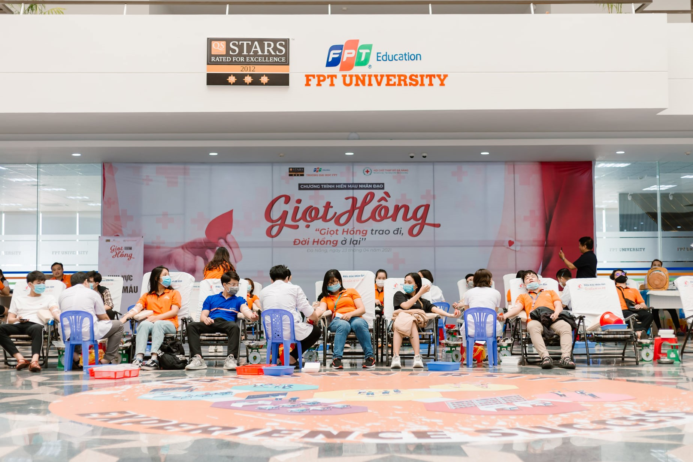

Blood Donation
CHƯƠNG TRÌNH HIẾN MÁU NHÂN ĐẠO "GIỌT HỒNG"
On April 23, 2021, at the Penrose lobby of Gamma building, FPT University, Danang, a blood donation activity named "Giọt Hồng" took place. This is a very meaningful activity organized by FPTU Danang in collaboration with the Da Nang Red Cross Society. Humanitarian blood donation activities so far must have been familiar to everyone. However, this is the first time the program has reached out to a large number of students of FPT University in Da Nang, spreading the spirit and good deeds in the student community of F. On that day, I've donated 250ml blood type B+.